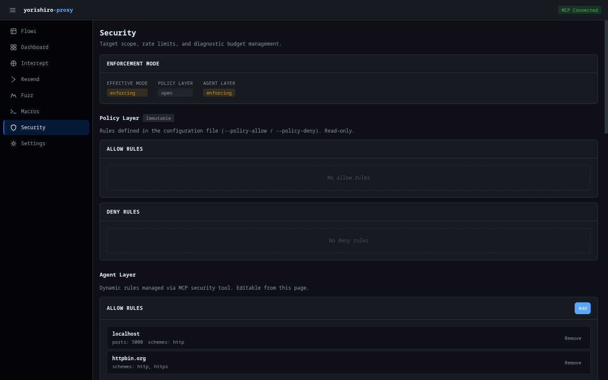

Security¶
The Security page manages target scope rules, rate limits, diagnostic budgets, and SafetyFilter settings. It provides both read-only views of policy-level configuration and editable agent-level controls.

Enforcement mode¶
At the top of the page, a card displays the enforcement mode for each security layer:
- Effective mode -- The combined mode that applies to all requests
- Policy Layer -- Mode derived from policy configuration (enforcing if any rules are defined, open otherwise)
- Agent Layer -- Mode derived from agent-managed rules
Each mode displays as a badge: enforcing (yellow) or open (default).
Target scope¶
Target scope uses a two-layer model to control which hosts the proxy can interact with.
Policy Layer¶
The Policy Layer shows rules defined in the configuration file via --policy-allow and --policy-deny flags. These rules are read-only and marked with an "Immutable" badge.
The layer displays two rule tables:
- Allow rules -- Hosts/patterns that are permitted
- Deny rules -- Hosts/patterns that are blocked
Each rule shows the hostname pattern, ports, path prefix, and scheme restrictions.
Agent Layer¶
The Agent Layer shows dynamically managed rules that you can add or remove at runtime. Each rule table (Allow and Deny) has an Add button to create new rules.
Adding a rule¶
Click Add to open the rule form. Specify:
- Hostname -- The target hostname pattern (e.g.,
*.example.com) - Ports -- Optional port restrictions
- Path prefix -- Optional URL path prefix filter
- Schemes -- Optional scheme restrictions (http, https)
Removing a rule¶
Each rule in the Agent Layer table has a remove button. Click it to delete the rule immediately.
URL test tool¶
The URL Test section lets you check whether a specific URL would be allowed or denied by the current scope rules. Enter a full URL (e.g., https://example.com/api/v1/resource) and click Test.
The result shows:
- Allowed or Denied -- Color-coded badge (green for allowed, red for denied)
- Layer -- Which layer made the decision (policy or agent)
- Reason -- Explanation of why the URL was allowed or denied
- Tested target -- The parsed URL components (scheme, hostname, port, path)
- Matched rule -- The specific rule that matched, if any
SafetyFilter¶
The SafetyFilter section displays input and output filter rules defined in the configuration. These rules are read-only and belong to the Policy Layer.
The header shows:
- Enabled/Disabled badge indicating whether the filter is active
- Immutable badge when the filter cannot be modified at runtime
Two rule tables are displayed:
Input filter rules¶
Rules that inspect outgoing requests to prevent dangerous operations. Each rule shows:
- Name -- Rule identifier
- Pattern -- Regex or match pattern
- Targets -- Where the rule applies (header, body, URL, etc.)
- Action -- What happens when the rule matches (block, warn)
- Category -- Rule classification
Output filter rules¶
Rules that filter incoming responses to redact sensitive data. Output rules additionally show:
- Replacement -- The text that replaces matched content
Rate limits¶
The Rate Limits section manages request throughput controls using the two-layer model.
Effective limits¶
Shows the combined limits that currently apply:
- Global RPS -- Maximum requests per second across all targets
- Per-Host RPS -- Maximum requests per second to any single host
Policy Layer¶
Read-only display of rate limits from the configuration file (marked "Immutable").
Agent Layer¶
Editable rate limits that you can adjust at runtime. Click Edit to modify:
- Global RPS -- Enter a value or leave blank for no limit
- Per-Host RPS -- Enter a value or leave blank for no limit
Click Save to apply or Cancel to discard changes.
Diagnostic budget¶
The Budget section manages request and time limits for diagnostic sessions.
Current usage¶
Shows real-time usage statistics:
- Requests -- Current request count with progress bar (when a max is set). The progress bar changes color at 70% (warning) and 90% (danger)
- Duration limit -- Maximum session duration
- Stop reason -- Displayed when the proxy was stopped due to budget exhaustion
Usage polls every 5 seconds.
Effective limits¶
The combined budget limits currently in effect.
Policy Layer¶
Read-only budget limits from the configuration file.
Agent Layer¶
Editable budget overrides. Click Edit to modify:
- Max total requests -- Maximum number of requests allowed (whole number)
- Max duration -- Maximum session duration in Go duration format (e.g.,
30m,1h,1h30m)
Click Save to apply or Cancel to discard changes.
Related pages¶
- Target scope -- Detailed target scope documentation
- SafetyFilter -- SafetyFilter feature documentation
- Rate limits & budgets -- Rate limiting documentation
- security tool -- MCP tool reference
- Security model -- Security architecture concepts